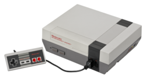
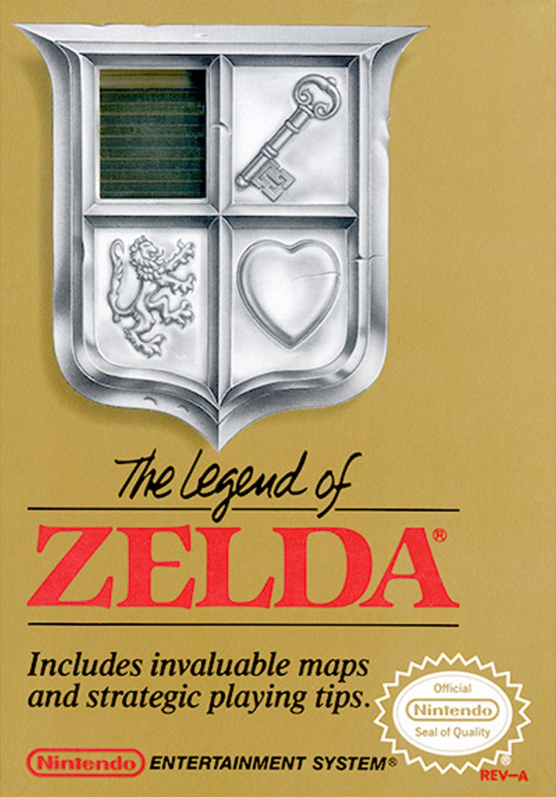
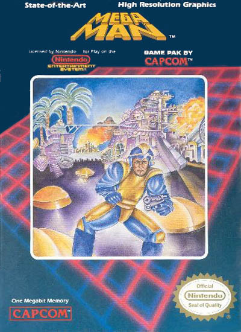
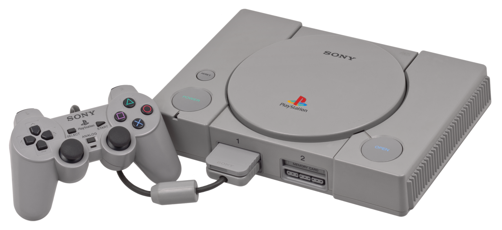
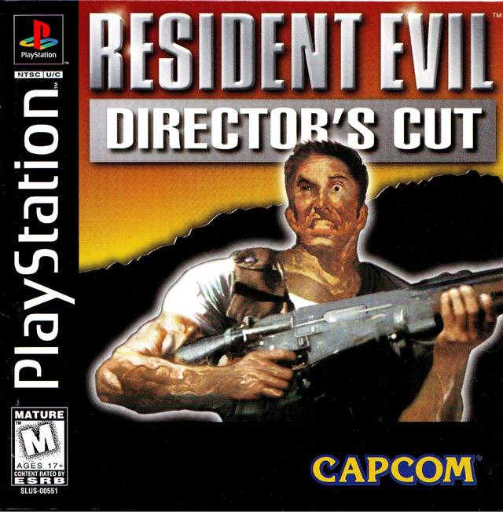
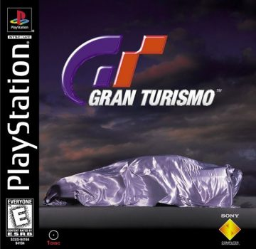

Nintendinho
O Nintendo Entertainment System (popularmente chamado de Nintendinho no Brasil) é um console de videogame de 8 bits lançado no Japão em 15 de julho de 1983 como Family Computer (Famicom) e lançado como NES redesenhado em mercados de teste nos Estados Unidos em 18 de outubro de 1985, seguido por um lançamento nacional em 27 de setembro de 1986. Foi distribuído na Europa, Austrália e partes da Ásia ao longo da década de 1980. Como um console de terceira geração, competiu principalmente com o Master System da Sega.

Jogos Mais Populares
Super Mario Bros
Lançamento: 13 de setembro de 1985.
A história acompanha o encanador Mario (ou seu irmão Luigi) em uma jornada pelo Reino do Cogumelo para derrotar o vilão Bowser e resgatar a Princesa Peach.

The Legend of Zelda
Lançamento:21 de fevereiro de 1986.
The Legend of Zelda conta a história do herói Link, que explora o reino de Hyrule para coletar oito pedaços da Triforce da Sabedoria, derrotar o vilão Ganon e resgatar a Princesa Zelda.

Mega Man
Lançamento: 17 de dezembro de 1987.
Mega Man (chamado de Rockman no Japão) conta a história de Rock, um robô assistente pacifista transformado em máquina de combate pelo Dr. Light para derrotar o vilão Dr. Wily, que reprogramou outros robôs industriais para dominar o mundo.

Super Nintendo
O Super Nintendo Entertainment System (abreviado como SNES), também conhecido como Super Famicom (SFC) no Japão e Super Comboy na Coreia do Sul, é um console de videogame de 16 bits desenvolvido e fabricado pela Nintendo. Lançado em 21 de novembro de 1990 no Japão, 23 de agosto de 1991 na América do Norte, 30 de abril de 1992 na Europa e 11 de abril de 1993 na Oceania, o SNES sucedeu o Nintendo Entertainment System (NES) e competiu com o Sega Genesis (Mega Drive) durante a quarta geração de consoles.

Jogos Mais Populares
Super Mario World
Lançamento: 21 de novembro de 1990.
Super Mario World segue Mario e Luigi enquanto eles viajam pelo Dinosaur Land para resgatar a Princesa Peach das garras do vilão Bowser. O jogo introduz Yoshi, um dinossauro que ajuda os irmãos em sua aventura.

The Legend of Zelda: A Link to the Past
Lançamento: 21 de novembro de 1991.
A Link to the Past segue o herói Link enquanto ele tenta salvar a Princesa Zelda e derrotar o vilão Ganon, explorando tanto o mundo da luz quanto o mundo das trevas em Hyrule.

Donkey Kong Country
Lançamento: 21 de novembro de 1994.
Donkey Kong Country segue Donkey Kong e seu amigo Diddy Kong enquanto eles tentam recuperar seu estoque roubado de bananas do vilão King K. Rool e seus Kremlings.

Nintendo 64
O Nintendo 64 (abreviado como N64) é um console de videogame de 64 bits desenvolvido e fabricado pela Nintendo. Lançado em 23 de setembro de 1996 no Japão, 23 de setembro de 1996 na América do Norte e 23 de setembro de 1996 na Europa, o N64 sucedeu o Super Nintendo Entertainment System (SNES) e competiu com o Sega Dreamcast e o PlayStation durante a quinta geração de consoles.

Jogos Mais Populares
Super Mario 64
Lançamento: 23 de setembro de 1996.
Super Mario 64 segue Mario enquanto ele explora o Reino do Cogumelo em uma aventura em três dimensões, coletando estrelas para resgatar a Princesa Peach das garras do vilão Bowser.

The Legend of Zelda: Ocarina of Time
Lançamento: 21 de novembro de 1998.
Ocarina of Time segue o herói Link enquanto ele tenta salvar a Princesa Zelda e derrotar o vilão Ganon, explorando tanto o mundo da luz quanto o mundo das trevas em Hyrule.

GoldenEye: 007
Lançamento: 23 de agosto de 1997.
GoldenEye é um jogo de tiro em primeira pessoa onde os jogadores assumem o papel de James Bond em uma missão para salvar o mundo.

Playstation
O PlayStation é um console de videogame de 32 bits desenvolvido e fabricado pela Sony. Lançado em 3 de dezembro de 1994 no Japão, 15 de agosto de 1995 na América do Norte e 27 de setembro de 1995 na Europa, o PlayStation sucedeu o Super Nintendo Entertainment System (SNES) e competiu com o Nintendo 64 e o Sega Dreamcast durante a quinta geração de consoles.

Jogos Mais Populares
Crash Bandicoot
Lançamento: 9 de setembro de 1996.
Crash Bandicoot é um jogo de ação em que os jogadores controlam um pequeno marsupial chamado Crash enquanto ele explora níveis desafiadores para resgatar sua namorada Tawna.

Resident Evil
Lançamento: 23 de março de 1996.
Resident Evil é um jogo de survival horror onde os jogadores assumem o papel de Jill Valentine e Leon S. Kennedy em uma missão para investigar um incidente em uma fazenda isolada.

Gran Turismo
Lançamento: 23 de março de 1997.
Gran Turismo é um jogo de simulação de corrida onde os jogadores podem competir em pistas reais e personalizar seus carros.

Playstation 2
O PlayStation 2 (PS2) é um console de videogame de 128 bits desenvolvido e fabricado pela Sony. Lançado em 4 de março de 2000 no Japão, 26 de outubro de 2000 na América do Norte e 24 de novembro de 2000 na Europa, o PS2 sucedeu o PlayStation original e competiu com o Nintendo GameCube e o Microsoft Xbox durante a sexta geração de consoles.

Jogos Mais Populares
Grand Theft Auto: San Andreas
Lançamento: 26 de outubro de 2004.
Grand Theft Auto: San Andreas é um jogo de ação em mundo aberto onde os jogadores assumem o papel de Carl Johnson "CJ" enquanto ele retorna à sua cidade natal para investigar a morte de sua mãe e se envolver em atividades criminosas.

God of War
Lançamento: 22 de março de 2005.
God of War segue Kratos, um guerreiro espartano que se vinga dos deuses olímpicos após a morte da esposa e filha.

Jak 3
Lançamento: 9 de novembro de 2004.
Jak 3 é um jogo de ação onde os jogadores controlam Jak enquanto ele luta contra o vilão Zeratul e sua legião de alienígenas.